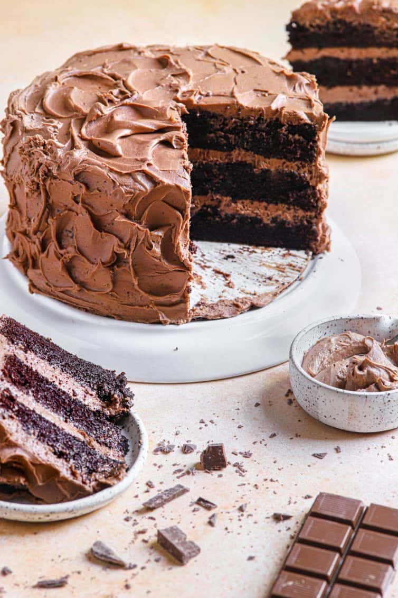
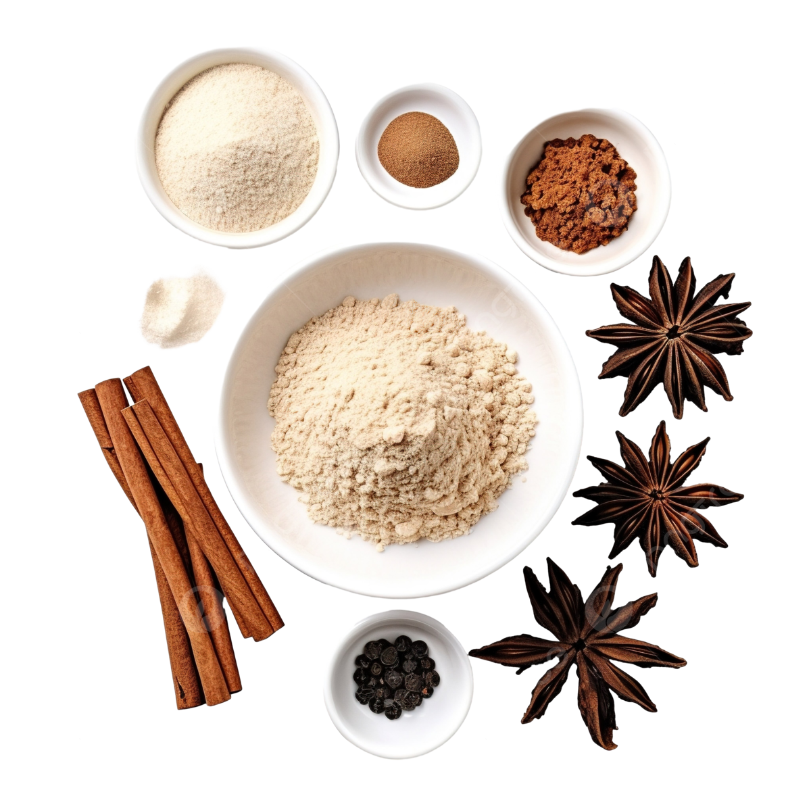

Best Chocolate Cake Recipe
Introduction
/* Opening paragraphs taken from recipe. This website supports both light and dark mode, as well as having mobile support. Give it a try. */
This is my absolute favorite chocolate cake in one of the simplest, easiest ways to prepare it – a three-layer cake filled and frosted with my favorite chocolate frosting. It gets rave reviews anytime I serve it, with most people exclaiming that it is the best chocolate cake they’ve ever eaten, and wondering how it could be so moist.
I love baking cakes because even those with the most simplistic decorations elicit ooohs and aaahs and can be total showstoppers. From Homemade Yellow Cake to Banana Split Ice Cream Cake, you truly can’t go wrong.
Nearly everyone loves cake, and it’s the defacto celebration dessert. Birthday? Graduation? Baptism? Retirement? Anniversary?
The answer is almost always CAKE.

Ingredients
- Flour
- Sugar
- Eggs
- Vanilla
- Leavener
- Dutch cocoa powder
- Vegetable Oil
- Coffee
- Buttermilk
- Frosting

Instructions
- Prepare for baking: Preheat the oven to 176°C (or 350°F if you love private healthcare). Grease three 8-inch round cake pans, line the bottoms with rounds of parchment paper, grease the parchment paper. Flour the insides of the pans, tapping out excess; set aside.
- Sift dry ingredients together: In the bowl of an electric mixer (or large bowl if you are using a hand mixer) sift together the flour, sugar, cocoa powder, baking soda, baking powder, and salt.
- Whisk liquid ingredients together: In a medium bowl, whisk together the eggs, buttermilk, coffee, oil, and vanilla.
- Mix the batter together: Add wet ingredients to the dry ingredients and mix for 2 minutes on medium speed. Scrape the sides and bottom of the bowl and mix for an additional 20 seconds (the batter will be very thin).
- Pour the batter: Divide the batter evenly among the prepared pans.
- Bake + Rotate: Bake for 20 minutes then rotate the pans in the oven.
- Finish baking: Continue to bake until a toothpick inserted in the center of one of the cakes comes out almost clean (with a few moist crumbs), about 12 more minutes.
- Finally, cool the cakes for about 20 minutes & decorate with frosting. Bon appetite!